Section 5.2: Complements and the Addition Rule
Learning Objectives
1.Use and interpret the complement rule.
2.Distinguish between disjoint and non-disjoint events.
3.Use the addition rule for disjoint events.
4.Use the general addition rule.
In this section we will discuss probability when an event does NOT happen, and probability when one event OR another will happen.
The Complement Rule
Example 1: Complements
A statistics class has 32 students enrolled. Of these, there are 7 Nursing majors, 2 Journalism majors, 3 Kinesiology majors, 3 English majors, 1 History major, 2 Political Science majors, 8 Business majors, and 6 undeclared majors.
a)What is the probability that a randomly selected student from this class is a Business major?
b)What is the probability that a randomly selected student from this class is NOT a Business major?
Solution:a)To find the probability that a student is a Business major, we need to find the number of Business majors and divide by the total.
b)To find the probability that a randomly selected student is NOT a Business major, we have two options. First, we can add up all majors that are NOT Business.
7 Nursing + 2 Journalism +3 Kinesiology + 3 English +1 History +2 Political Science +6 undeclared = 24 students. Then,
The other option, which is faster, is to use the fact that all the probabilities must add up to 1. Thus, we can subtract the probability of being a Business major from 1 to obtain the probability of NOT being a Business major.
So, we obtained the same result using each method. And the result makes sense when you put it into words. If 25% of the class are Business majors, then 75% are NOT Business majors.
Clearly, any student will either be a Business major, or they will NOT be a Business major. There are only two choices. These are called complementary events, or simply complements.
Definition 1
The complement of an event E consists of all the outcomes where E does NOT happen. The complement of E is denoted “not E” or .
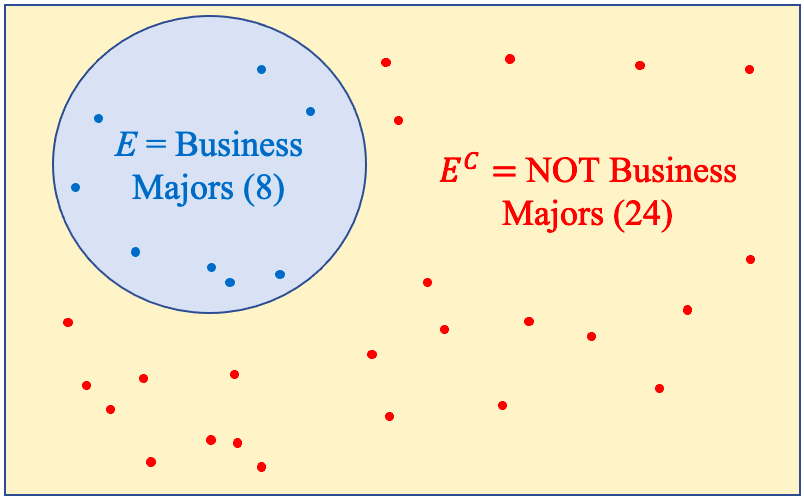
Figure 5.10: A Venn diagram for E and E complement from example 1.
Figure 5.10 is a Venn diagram that shows the event E (student is a Business major) and the complement of E (student is NOT a Business major). Notice that the total of the number of students in E and NOT in E (or in the complement) is 8 + 24 = 32, which is the total. That is always the case for any event E and its complement! For that reason, the probability that E will happen or that E will not happen must always add to 1. This leads us to the extremely helpful feature of complements and their probability that we used as the second (and faster) method in example 1.
The Complement Rule
For any event E, the probability that E will occur plus the probability that E will NOT occur is 1. That means that we can find the probability of a complementary event by subtracting a probability from 1.
The complement rule is something you probably have already used instinctively. If there is a 40% chance you will be called in to work on a Saturday, then you know there is a 60% chance that you will not be called in to work. It there is a 30% chance of rain, then we know there is a 70% chance it will not rain.
Example 2: Using Complements
According to the Pew Research Race in America survey in 2019, 68% of Black Americans feel that being Black hurts their chances to get ahead in this country. Express this as a probability and find and interpret the complement.
Solution:The probability is given as a percent. We can interpret it as the probability that randomly selected Black American feels that being Black has hurt their chances to get ahead in this country is 0.68.
The complement is “a randomly selected Black American does NOT feel that being Black hurt their chances to get ahead in this country.” The probability of the complement is
That should make intuitive sense when we convert back to percent. If 68% feel being Black hurts their chances, then the remaining 32% do not feel being Black hurts their chances.
The Addition Rule for Disjoint Events
Example 3: An “OR” Probability
The frequency table given in Table 1 (from section 5.1) is from a student survey regarding tattoos. Find the probability that a randomly selected person has one tattoo OR more than one tattoo.
Table 1: Summarized Tattoo Data | |
|---|---|
What best describes you? | Frequency |
I have no tattoos | 59 |
I have one tattoo | 13 |
I have more than one tattoo | 35 |
I have had tattoos removed | 5 |
Solution:Having one tattoo OR more than one tattoo is a combination of the two categories, “I have one tattoo” and “I have more than one tattoo.”
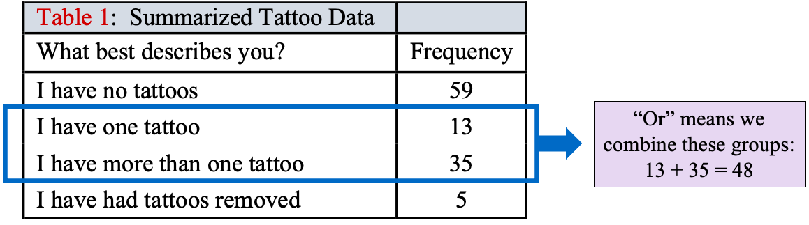
One way to approach this is to combine the categories first, then find the probability directly. Here, the number with one or more tattoos is 13 + 35 = 48. The total number of participants is 112. Therefore, the probability that a randomly selected person has one or more tattoos is
Another option is to calculate each probability separately, then add them together. The probability of having one tattoo is
The probability of having more than one tattoo is
If you add the two probabilities together, you get 0.1161 + 0.3125 = 0.4286, which is the same answer. The word “or” in probability tells us to combine categories, which turns out to be the same as adding the probabilities.
 Tip!
Tip!The word “or” in a probability problem means that you must combine categories. Ultimately, that means that probabilities will need to be added, sometimes with great care. Remember: “Or” means “Add”!
In the last example we were able to find the probability of each event separately, then add them together. This is always true when the events have no outcomes in common. When this happens, we say the events are disjoint.
Definition 2
Two events are called disjoint if they have no outcomes in common. Disjoint events are also called mutually exclusive.
Example 4: Probability with Disjoint Events
A statistics class has 32 students enrolled. Of these, there are 7 Nursing majors, 2 Journalism majors, 3 Kinesiology majors, 3 English majors, 1 History major, 2 Political Science majors, 8 Business majors, and 6 undeclared majors.
a)Are the listed majors disjoint?
b)Find the probability that a randomly selected student is a Nursing OR Kinesiology major.
Photo by javier trueba (opens in a new tab) on Unsplash (opens in a new tab)
Solution:a)We will assume that each student can have only one declared major. In that case, no randomly selected student could have more than one major, and the events are disjoint.
b)The probability that a randomly selected student is a Nursing OR Kinesiology major can be found two ways.
Method1: Find the total number of students who are Nursing majors and Kinesiology majors, add them together, then divide by the total.
Method 2: Find the probabilities separately, then add.
So,
The Addition Rule for Disjoint Events
If two events E and F are disjoint, then
In other words, if two events do not have outcomes in common, the probability that one or the other occurs is the sum of their individual probabilities.
Example 5: Eligible Voters
Table 4 contains the probability distribution for eligible U.S. voters in 2018, from section 5.1, example 8.
a)Find the probability that a randomly selected eligible voter is Black or Hispanic.
b)Find the probability that a randomly selected eligible voter is Black, Hispanic, or Asian.
c)Find the probability that a randomly selected eligible voter is non-White.
Table 4: Probability Distribution for U.S. Eligible Voter Population in 2018 | |
|---|---|
Probability | |
Black | 0.1277 |
Hispanic | 0.1250 |
Asian | 0.0441 |
White | 0.6742 |
Other | 0.0290 |
Solution:Eligible voters are categorized into the single best description of their ethnicity or race. So, for example, if a person is both Black and Hispanic and did not want to choose just one of those as the best description of their ethnicity or race, they could choose “Other.” So, each individual is counted in only one category, and we can treat these categories as disjoint.
a)
b)
c)
Note that you could also have added to the answer in (b) to get 0.2968 + 0.0290 = 0.3258 = the probability of being non-White.

Important Point!
When two events are disjoint, to find the probability that one or the other occurs, just add the probabilities of each one together. “Or” statements with disjoint events means add probability.
At this point in our discussion, finding the probability that event E or event F will happen doesn’t seem too complicated. Things are working out nicely because the events we are working with are disjoint. Unfortunately, there are complications that occur when the events are not disjoint.
Non-disjoint Events and the Addition Rule
Two events are not disjoint (or non-disjoint) if they have outcomes in common. We see this quite often when we collect data that have multiple criteria involved. When there are common outcomes, we must take care not to accidentally count them more than once.
For example, Assume we have collected data from a survey of students. An example of a disjoint pair of events could be:
Event E is “a randomly selected student is a teenager” and
Event F is “a randomly selected student is of legal drinking age in the U.S.”
These are disjoint because no single individual could be both a teenager and be of legal drinking age, which is 21 years and above. These two criteria have no outcomes in common. See the Venn diagram in figure 5.11.
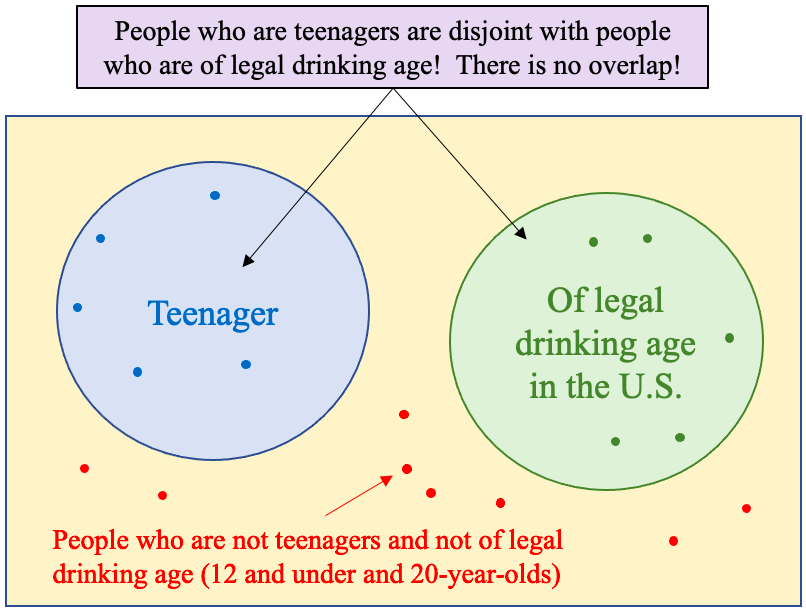
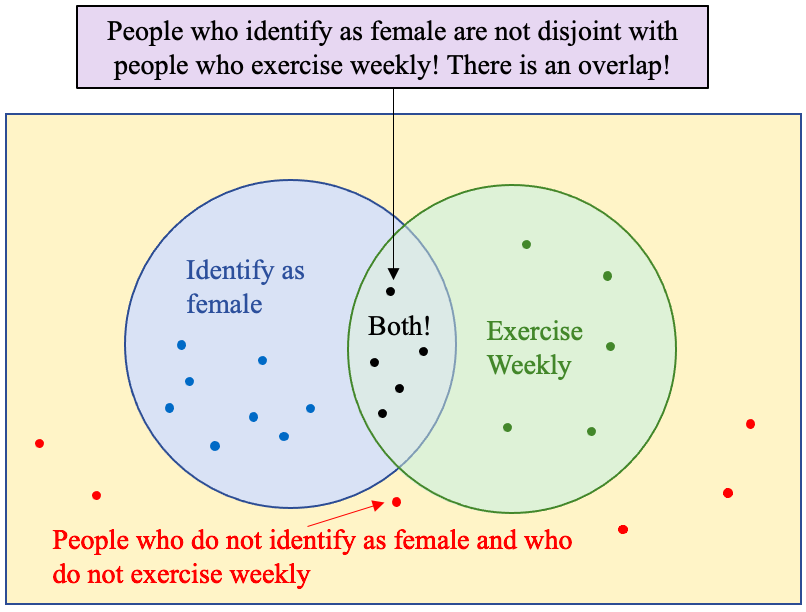
Figure 5.11: A Venn diagram for disjoint and non-disjoint events.
Two events that are not disjoint could be:
Event E is “a randomly selected student identifies as female”, and
Event F is “a randomly selected student exercises weekly.”
There are plenty of people who identify as female who also exercise weekly. It is entirely possible to randomly select one person who satisfies both criteria, so there are outcomes in common. See figure 5.11.
Important Point!
Two events are disjoint if no randomly selected individual (or outcome of an experiment) can satisfy the criteria for both events. They are not disjoint if you can randomly select at least one individual (or outcome of an experiment) that will satisfy the criteria for both events.
Example 6:
In a survey of 40 students enrolled in a statistics course, a professor finds that she has 18 students also taking an English class and 12 students also taking a History class. There were 3 students who were taking both English and History in addition to Statistics.
a)What is the probability that a randomly selected student from the statistics class is also taking English?
b)What is the probability that a randomly selected student from the statistics class is also taking History?
c)What is the probability that a randomly selected student from the statistics class is also taking both English and History?
d)What is the probability that a randomly selected student from the statistics class is also taking English or History?
Solution:a)There are 18 students out of 40 taking English, so .
b)There are 12 students out of 40 taking History, so .
c)There are 3 students out of 40 taking both English and History, so .
d)Now for the complicated part. To find the probability that a student is taking English or History in addition to statistics, we must count those students. There are 18 taking English and 12 taking History, which makes 30. BUT there were 3 students taking both. Those three students are going to be counted twice if we aren’t careful! You can see this in the Venn diagram in figure 5.12.
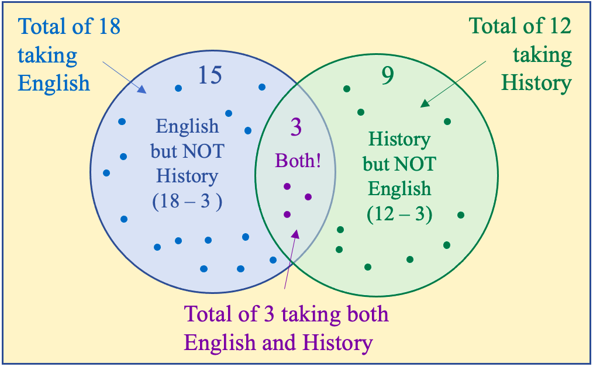
Figure 5.12: A Venn diagram for English and History students.
So, we start with the 18 taking English, and we will add the students taking History. Three of them we already counted since they were taking English, so there are 12 – 3 = 9 more students taking History that we didn’t already count. That makes 18 + 9 = 27. Thus, the probability of taking English or History is
Yikes! That was complicated. Isn’t there an easier way? Well, yes. Sort of. If you combine the probabilities, we calculated in parts (a) through (c) correctly.
Note that . So, unlike disjoint events, the probability of English or History is NOT the sum of the probabilities. The problem is that three students were counted in the computation for taking English, and they were counted a second time in the computation for taking History. To correct it, we can remove the three students one time. It’s very much like when you are accidentally charged twice for the same item at a cash register. To get the correct charge, one of the charges is subtracted.
That is the same answer we got before, so this approach appears to work.
Next, we will rewrite the first step above to develop a general rule.
This is called the addition rule for non-disjoint events, or more commonly, the General Addition Rule.
The General Addition Rule
For any two events E and F,
In other words, if two events have outcomes in common, the probability that one or the other occurs is the sum of their individual probabilities, minus the probability that both occur. The subtraction removes one copy of the probability that was counted twice.
If E and F are disjoint, since they can’t both occur (it’s impossible, so probability is zero). In this case, the General Addition Rule is
So, the addition rule for disjoint events is a special case of the General Addition Rule.
Tip!OR versus AND
The word “OR” in means E happens OR F happens OR both happen. Only one of the two categories must happen, not necessarily both! But if both happen, that works too!
Suppose a friend asks if you had bacon or sausages for breakfast. The answer is “Yes” if you:
•Had bacon but no sausages.
•Had sausages but no bacon.
•Had both bacon AND sausages.
If your friend asks if you had bacon AND sausages for breakfast, then the answer is “No” to the first two bullets. “OR” is an inclusive word while “AND” is a restrictive word. See figure 5.13.
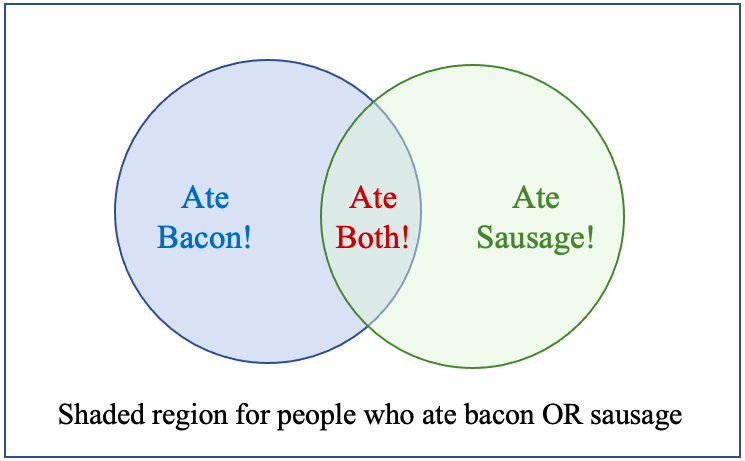
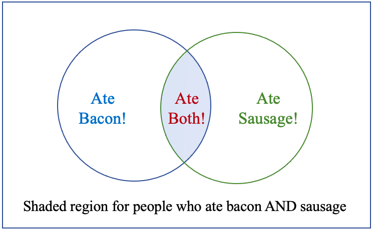
Figure 5.13: Bacon OR Sausage vs. Bacon AND Sausage.
When we have two or more qualitative variables, we can organize the data into a table called a two-way table, contingency table, or two-factor table. We can use the two-way tables to find probability.
Example 7: A Two-way Table
The 2019 Pew Research Survey on Race in America asked respondents to state how race or ethnicity should be used in the college admissions process. The results are summarized in Table 8. Find the probability that a randomly selected participant
a)Feels race/ethnicity should be a Major factor.
b)Feels race/ethnicity should be a Minor factor.
c)Feels race/ethnicity should not be a factor.
d)Is Hispanic OR thinks it should be a Major factor.
e)Is Black OR thinks it should be a Minor factor.
f)Is White AND thinks it should not be a factor.
Table 8: How should race or ethnicity be considered in college admissions? | |||||
|---|---|---|---|---|---|
White | Black | Hispanic | Asian | Total | |
Major Factor | 120 | 273 | 173 | 43 | 609 |
Minor Factor | 539 | 304 | 346 | 96 | 1285 |
Not a Factor | 2338 | 941 | 1055 | 193 | 4527 |
Total | 2997 | 1518 | 1574 | 332 | 6421 |
Solution:a)There are 609 who feel that race or ethnicity should be a major factor, and 6421 total responses.
So, Or, about 9.5% of people surveyed feel that race or ethnicity should be a major factor in college admissions.
b)There are 1285 responses that race or ethnicity should be a minor factor. So, About 20% of people surveyed feel race or ethnicity should be a minor factor in college admissions.
c)There are 4527 responses that race or ethnicity should not be a factor. So, About 70.5% of people surveyed feel race or ethnicity should not be a factor in college admissions.
So far, the questions have only been about one of the two factors. The next three questions require more thought.
d)To find the probability that a randomly selected participant is Hispanic OR thinks race or ethnicity should be a Major factor we will use the General Addition Rule.
There are 1574 Hispanic respondents, highlighted in the blue column. There are 609 who feel race or ethnicity should be a Major factor, highlighted in the red row. There are 173 responses that are Hispanic AND feel race or ethnicity should be a Major factor, circled in purple. Those 173 are counted twice, once in the column and once in the row, so they are subtracted once to correct the count.
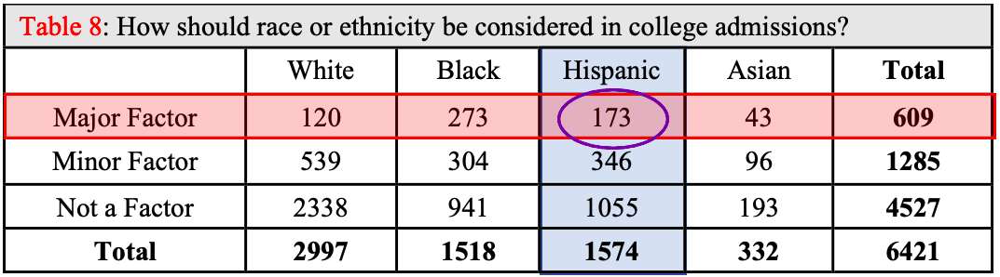
e)To find the probability that a randomly selected participant is Black OR thinks it should be a Minor factor we will again use the General Addition Rule. We know to use the General Addition Rule because we are asked to find the probability of _______ OR __________. The key word is “OR.”
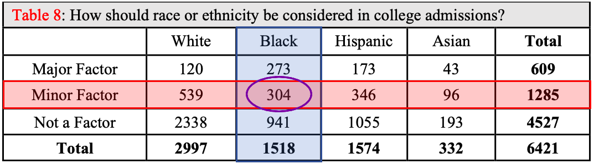
There are 1518 Black responses, and 1285 responses that race or ethnicity should be a minor factor. There are 304 responses that are duplicated.
f)The key to part (f) is to recognize the word “AND” is used, not “OR.” When we use “AND,” we mean that both events must happen. “AND” means that we are only counting the overlap of the two categories. In this case, the number of responses from White individuals who also think race or ethnicity should not be a factor is 2338.
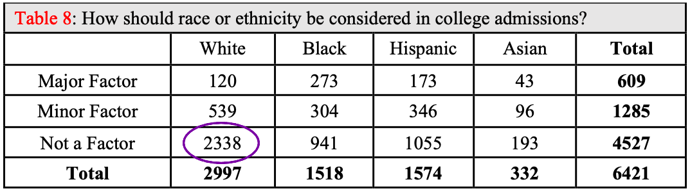
In the next two sections we will look more deeply at how we can use probability to analyze the variables summarized in two-way tables.
Tip!When we are working with data in two-way tables, we use the general addition rule when we find the probability of an “OR” statement. For “AND” statements, we don’t need to use a special rule. Just find the number that satisfies both criteria and divide by the total.
Sometimes we are not given information in a two-way table, but we can summarize it that way ourselves. Example 6 in this section is such an example. We were able to find the probability example 6 was asking for because exactly the information we needed was given. But we could have been asked for other, related probabilities that we can find if we organize the information first.
Example 8: Create a Two-way Table
In a survey of 40 students enrolled in a statistics course, a professor finds that she has 18 students also taking an English class and 12 students also taking a History class. There were 3 students who were taking both English and History in addition to Statistics.
a)Make a two-way table to summarize this information.
b)What is the probability that a randomly selected student from the statistics class is not taking History and not taking English?
c)What is the probability that a randomly selected student from the statistics class is not taking History or not taking English?
Solution:a)To make a two-way table from the data, we use one of the events (or factors) as columns and the other as rows. It doesn’t matter which you use. For this example, we will use English as the rows and History as the columns. The table is shown in Table 9.
Table 9: Two-Way table for English and History | |||
|---|---|---|---|
Taking History | Not Taking History | Total | |
Taking English | |||
Not Taking English | |||
Total | |||
Next, we put the numbers into the table that we know. The total number in the class is 40. That is the “grand total” that will go into the lower right-hand corner. The row total for the number taking English is 18, and the column total for the number taking History is 12.
Table 9: Two-Way table for English and History | |||
|---|---|---|---|
Taking History | Not Taking History | Total | |
Taking English | 18 | ||
Not Taking English | |||
Total | 12 | 40 | |
There were 3 students taking both English and History, so we put 3 into the box where the “Taking English” row intersects the “Taking History” column.
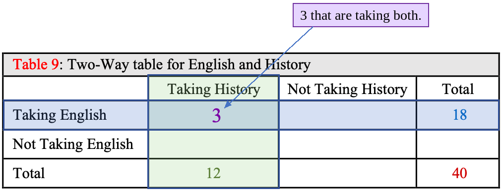
Now we work to fill in the rest of the table. Since each row adds up to its total, and each column adds up to its total, we can fill in the unknown values using the totals and subtraction.
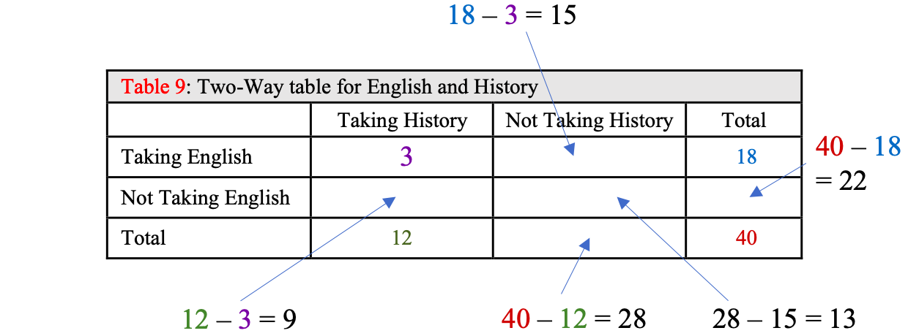
To find out how many students were taking English, but not History we subtract the amount taking both History and English from the total taking English: 18 - 3 = 15, so 15 students are taking English, but not History. Notice that some of the cells must be filled in after we figure out the others. For example, we needed to know how many were taking English but not History (18 - 3 = 15), and how many total students were not taking History (40 - 12 = 28) before we could figure out how many students were taking neither history nor English (28 - 15 = 13). The final table is shown in figure 5.14.
Table 9: Two-Way table for English and History | |||
|---|---|---|---|
Taking History | Not Taking History | Total | |
Taking English | 3 | 15 | 18 |
Not Taking English | 9 | 13 | 22 |
Total | 12 | 28 | 40 |
Figure 5.14: Two-way table for students taking English or History.
b)Now that we have the two-way table complete, we can use it to answer the remaining questions. What is the probability that a randomly selected student from the statistics class is not taking History and not taking English? This is an “AND” statement, so we just find the number of students that are in both categories. In this case, there are 13 such students.
c)What is the probability that a randomly selected student from the statistics class is not taking History or not taking English? Since this is an “OR” statement, we need to use the General Addition Rule.
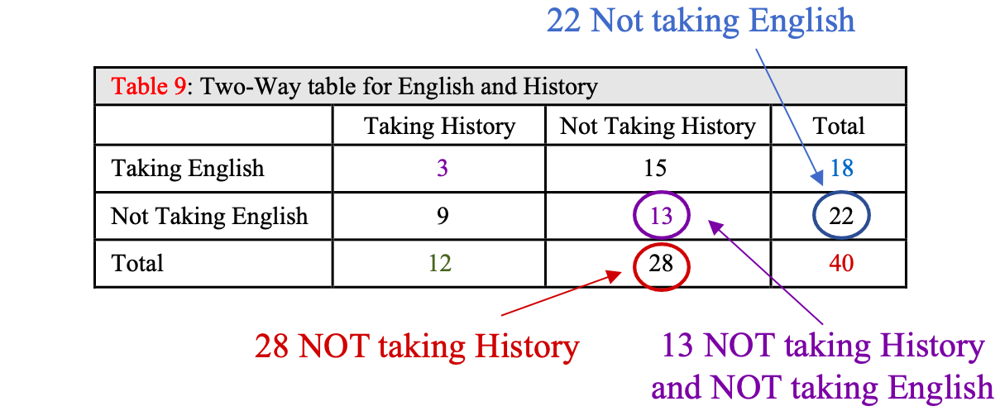
Example 9: Rolling two dice
Find the probability of rolling two six-sided dice and
a)getting doubles or the sum of the two faces is 10 or more.
b)getting the sum of the two faces is odd or less than 5.
c)neither of the two dice is a two.
Solution:We will use the theoretical approach for this problem because we can create a sample space of equally likely outcomes. The illustration of the sample space of outcomes when rolling two six-sided dice is shown in figure 5.15. Note that there are 36 possible outcomes of rolling two dice.
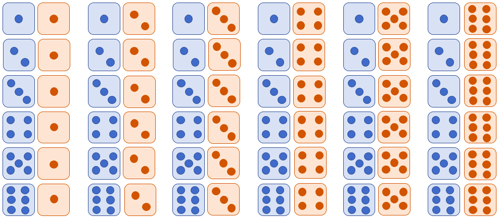
Figure 5.15: Illustration of the sample space for rolling two six-sided dice.
a)Notice that rolling double fives or double sixes are both doubles and have a sum that is 10 or more, so these are not disjoint events. Thus, we must use the General Addition Rule.
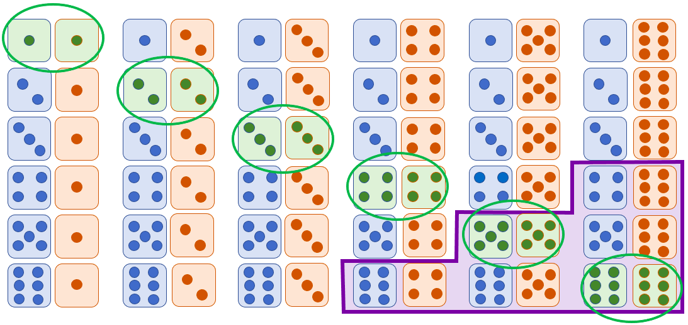
Figure 5.16: Illustration of the outcomes rolling doubles or sum that is 10 or more.
Figure 5.16 is a copy of the sample space where the highlighted and circled green ovals show the 6 ways to get doubles (that is, the same roll on both dice). Highlighted and surrounded in the purple rectangular region are the 6 ways to get a sum that is equal to 10 or more. There are 2 outcomes that are both doubles AND where the sum is 10 or more. So,
You can verify by counting the highlighted rolls in the sample space there are 10 total ways to get doubles or a sum of 10 or more. So, if you roll two dice repeatedly, you will get doubles or a sum of 10 or more about 27.78% of the time.
b)Figure 5.17 is a copy of the sample space where the odd sums are highlighted and circled in green. As you might expect, there are 18 ways to get an odd sum (half of the sums that are possible). There are 6 ways to get a sum less than 5, and they are highlighted with the red rectangular region. There are two ways to get a sum equal to 3, which is both odd and less than 5, and these are the only common outcomes. You can count the number of highlighted outcomes that are odd or have sum less than 5 directly (there are 22 total highlighted outcomes) or use the general addition rule.
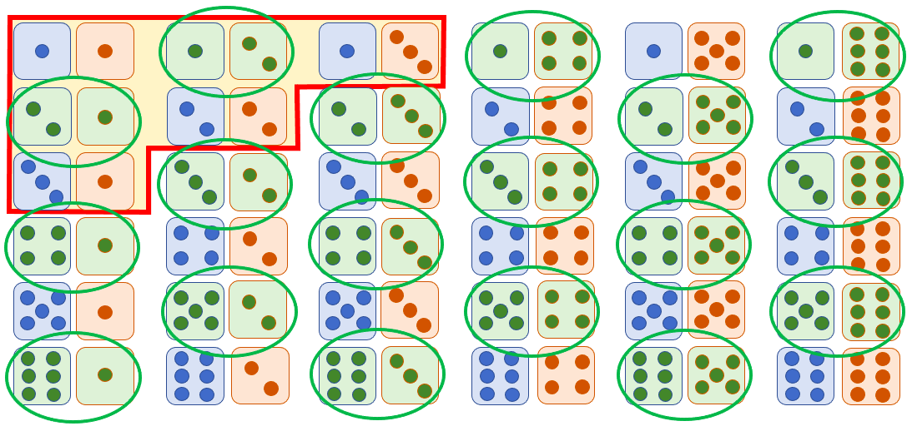
Figure 5.17: Illustration of the outcomes rolling an odd sum or a sum that is less than 5.
Using the general addition rule, we get
c)To find the probability of not rolling a two on either die, we use the complement rule. The complement of “not rolling a two on either die” is “roll a two on the red die or the blue die.” There are 11 different ways where a two appears on one or both dice, highlighted in figure 5.18.
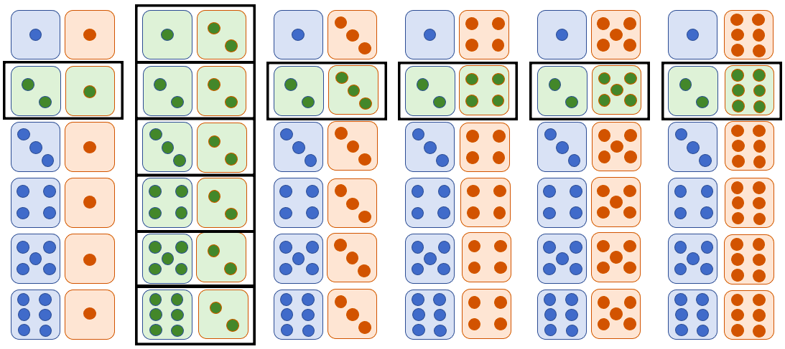
Figure 5.18: Illustration of the outcomes rolling two dice and getting a two.
That means Applying the complement rule,